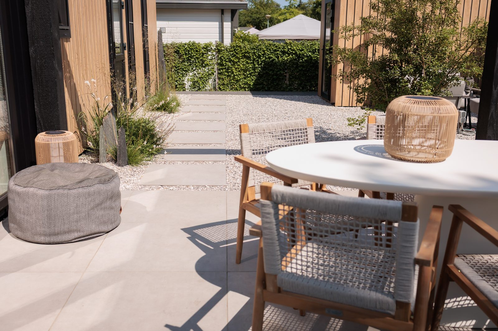

Vakkundige realisatie van bestrating, beplanting en alle elementen — tot in detail afgewerkt, precies zoals ontworpen.
Ons ervaren team verzorgt de complete aanleg: grondwerk, bestrating, beschoeiing, beplanting en verlichting. Wij werken netjes, planmatig en met oog voor de afwerking die het verschil maakt.
U heeft één aanspreekpunt van begin tot eind, en wij houden u gedurende het werk op de hoogte van de voortgang. (Voorbeeldtekst — te vervangen door de definitieve omschrijving.)

Wij plannen het werk, regelen materialen en stemmen de planning helder met u af.
Een stevige basis: afgraven, egaliseren en de fundering voor bestrating en beplanting.
Bestrating, beschoeiing, beplanting en elementen worden vakkundig aangelegd.
Wij leveren de tuin netjes op en lichten het onderhoud voor het komende seizoen toe.
Wij denken graag met u mee. Neem vrijblijvend contact op voor een eerste gesprek.
Vraag een offerte aan